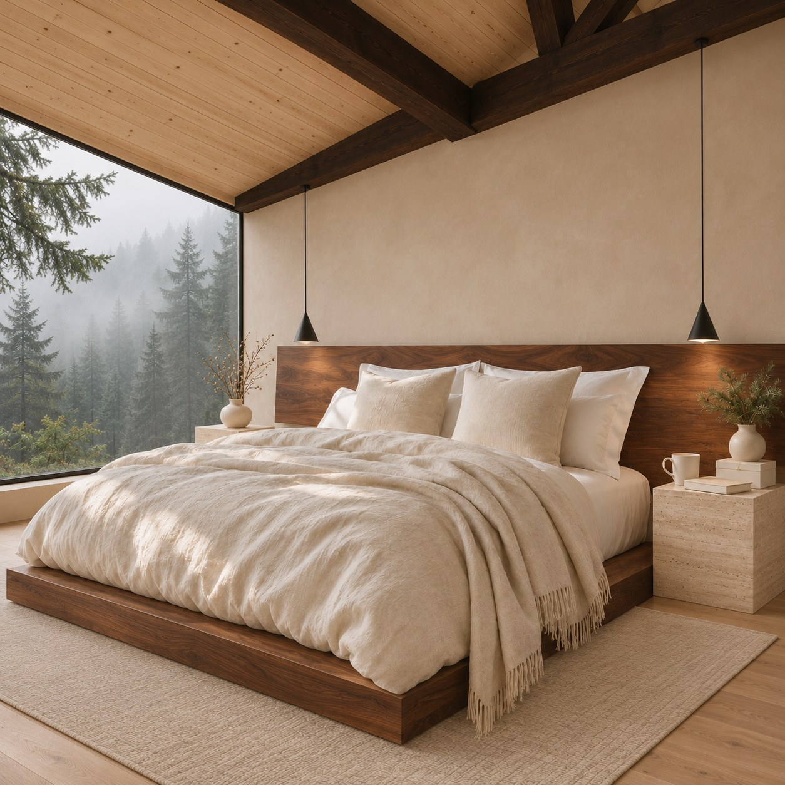

Bring your artwork
Import a finished PNG or JPEG. hannai preserves the original file for the customer download.
Digital artwork. Thoughtfully presented.
Turn your finished artwork into a coordinated listing. Beautiful applications, protected previews, and clean customer files—prepared together on your iPhone.
In development · Etsy integration awaiting approval
Explore the samples ↗
A little room to experiment
Choose a pattern and a season. Explore how one design carries across a complete four-image listing.
Your design, carried through
The room, textiles, and tabletop stay coordinated. The fourth image explains the digital download.
Interactive gallery of pre-rendered samples made with hannai’s compositor. No upload or live rendering on this website. Sample designs are demonstration artwork.
Select a pattern, season, or image to explore.
From artwork to a reviewed draft
Import a finished PNG or JPEG. hannai preserves the original file for the customer download.
Prepare coordinated images with Default, Thanksgiving, or Christmas compositions. Reusable templates keep the layout consistent.
Review protected images, file information, listing details, and your own license. Save the package locally.
The Etsy integration is designed to create a draft after you connect and approve. You review and publish it yourself in Etsy.
Built around your original
AI-authored photographic templates provide the setting. A deterministic compositor places a protected copy of your pattern on the designated surfaces. It does not ask AI to redraw your artwork.
The customer receives the original artwork, your approved license, and a readme. The furniture and products pictured are illustrative applications, not physical items for sale.
hannai is currently in development. Live Etsy access is pending Etsy approval and service deployment. This page is not an app-store availability announcement.